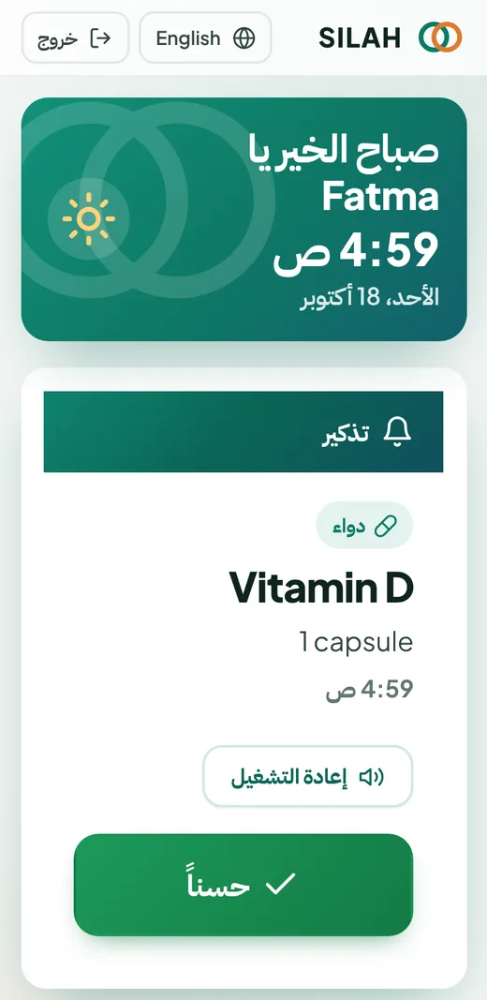
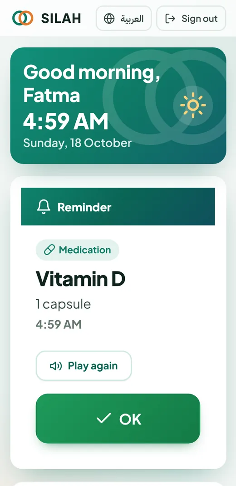
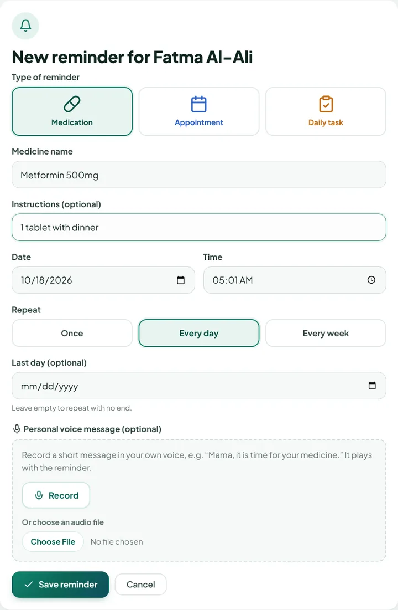
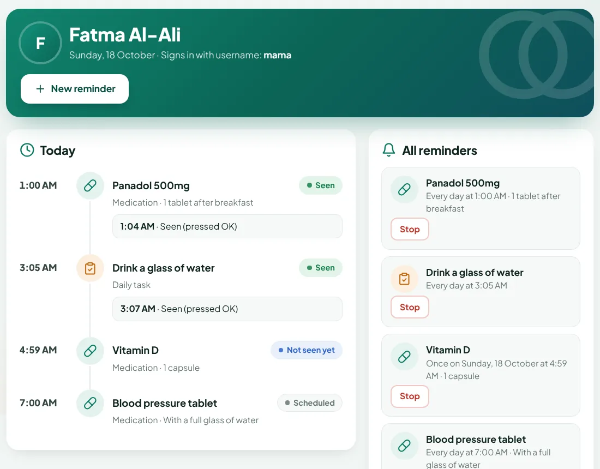

Users
idPKfull_nameusernameuniquepassword_hashroleelderly / familylanguagear / en
A family-care web application that helps elderly users manage medication, appointment and daily-task reminders — in the voice of the people they love.
Project timeline
Idea, main features, user workflow, security requirements and technology stack.
CompleteElderly-friendly interface, database structure, reminder workflow, tasks and test cases.
CompleteMain pages in Arabic and English, database connected, reminders with text and voice notifications.
NextFinal features, full testing, and the finished website online.
PlannedWeek 2
Designed the initial elderly-friendly interface layout, focusing on large text, clear buttons, and simple navigation.
Planned the database structure for Users, Family Links, Invitations, Reminders, and Reminder Responses.
Outlined the reminder creation and scheduling workflow for text and personalized voice notifications.
Organized development tasks among group members and prepared initial test cases for reminder responses, missed reminders, and secure family access.
Week 2 · Interface design




Week 2 · Database structure
id PKfull_nameusername uniquepassword_hashrole elderly / familylanguage ar / enid PKelderly_id FK → Usersfamily_id FK → Usersrelation e.g. Daughterid PKcode uniqueelderly_id FK → Usersexpires_at 24 hoursused_by single useid PKelderly_id FK → Userskind medication / appointment / tasktitle, detailsstart_date, time, repeatvoice_fileid PKreminder FK → Remindersresponse_type took it / later / text / voicetext, voice_filecreated_atOne elderly user can have many family members (through Family Links) and many reminders. Each reminder collects the elderly user’s responses. An invitation creates a new family link once, then expires.
Family member picks the type, title, date, time and repeat (once, daily, weekly).
Record a personal message in the browser or upload a file. Without one, the text is read aloud.
The reminder is stored in the Reminders table, linked to the elderly user.
At the set time: a chime, then the voice (or spoken text), with the reminder in large text.
The elderly user taps the button and the family sees the response.
Week 2 · Task division
Interface (UI/UX) & Arabic/English
Backend & database
Voice notifications & reminders
Testing & documentation
| ID | Area | Test | Expected result |
|---|---|---|---|
| TC-01 | Reminder responses | Elderly user taps “I took it” on a medicine reminder | Response saved; family sees “I took it” with the time |
| TC-02 | Reminder responses | Elderly user taps “Later” | Reminder comes back after 10 minutes |
| TC-03 | Missed reminders | No answer for 15 minutes | Reminder is repeated as a follow-up |
| TC-04 | Missed reminders | Still no answer after 30 minutes | Marked “No response” and shown to the family |
| TC-05 | Secure family access | A family member who is not linked opens another elderly user’s page | Access refused |
| TC-06 | Secure family access | An invitation code is used twice, or after 24 hours | Code refused |
Week 1 · Complete
Finalized the SILAH project idea: a family-care application that helps elderly users manage medication, appointment, and daily-task reminders.
Identified the main features, including personalized voice reminders, Arabic and English support, reminder responses, missed-reminder follow-up, and secure family linking.
Documented the user workflow, family dashboard, reminder-response process, and key security requirements.
Proposed the prototype technology stack: HTML, CSS, JavaScript, Python Flask, and SQLite.
Week 1 · The idea
Many elderly people take several medicines a day, have regular appointments and small daily tasks — and often live apart from the children who worry about them. Paper notes and phone alarms are easy to miss and do not tell the family anything.
SILAH (Arabic for “connection”) links the two sides. Family members set the reminders, record a short message in their own voice, and see whether each reminder was answered. The elderly user gets one clear, large-text screen with big buttons.
Creates reminders, records voice messages, and follows today’s reminders from a dashboard.
Hears the reminder, sees it in large text, and answers with one tap.
Week 1 · Main features
A family member records a short message — “Mama, it’s time for your medicine” — that plays when the reminder is due.
Every screen in both languages, with a right-to-left layout for Arabic. Each user chooses their own language.
The elderly user answers with large buttons: I took it, Later, or a short voice or text reply.
If there is no answer, the reminder repeats after a short time. If it is still unanswered, the family is alerted.
Relatives join with a one-time invitation code, so only trusted family members can see or manage reminders.
One page that shows today’s reminders, their status, and anything that needs attention.
Week 1 · Documentation
A family member signs up and creates the account for the elderly relative.
Choose medication, appointment or task; set the date, time and repeat; record a voice message.
At the set time the elderly screen plays a chime and the voice message, and shows the reminder in large text.
One tap: I took it, Later, or a voice/text reply.
The answer appears on the family dashboard straight away.
“I took it” is the user’s own confirmation. “No response” means nothing was recorded — not that medicine was missed.
Week 1 · Documentation
Passwords are stored only as secure hashes, never as plain text.
Family members and elderly users each see only their own screens.
Reminders are visible only to relatives linked to that elderly user. Invitation codes work once and expire after 24 hours.
Sign-in is paused for 10 minutes after 5 wrong passwords.
Forms are protected against cross-site requests; voice uploads are checked for type and size.
HTTPS when hosted. SILAH is a reminder tool, not a medical device.
Week 1 · Technology
Page structure and accessible, large-text screens.
Responsive layout for phones and computers, right-to-left for Arabic.
Checking for due reminders, playing sounds, recording voice in the browser.
The server: accounts, reminders, scheduling and responses.
Stores users, family links, reminders and responses.